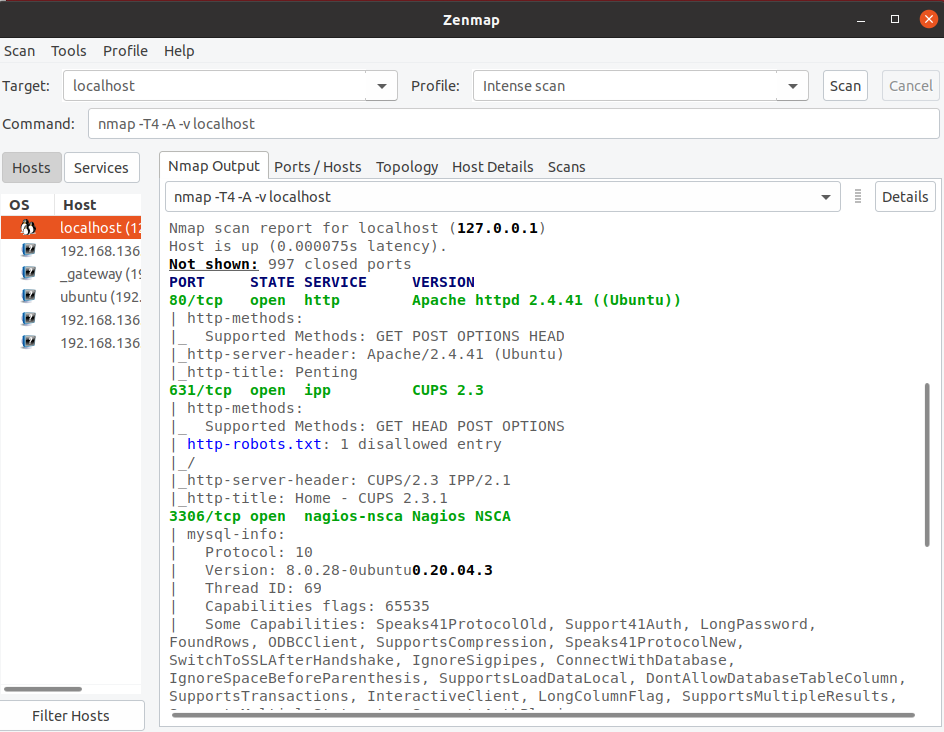
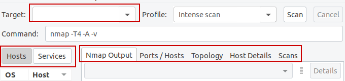
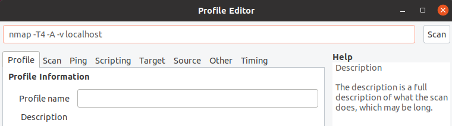
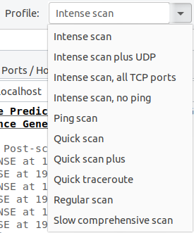
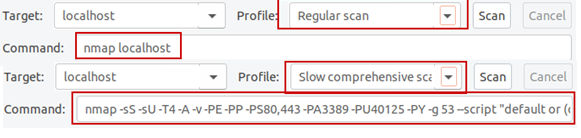
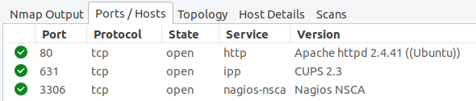
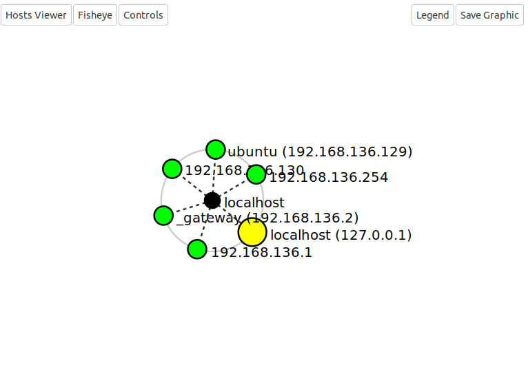
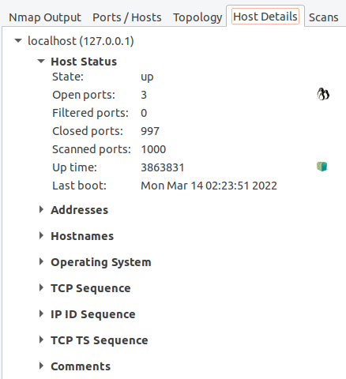
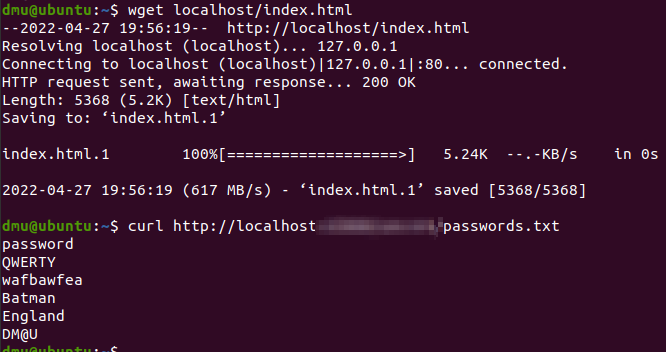

Other Tools
Here is the URL to the offical Zenmap page: https://nmap.org/zenmap/
Pre knowledge:
as a rule of thumb, its best to know common ports used beforehand.
For example knowing SSH = port 22, DNS = 53, HTTP/s = 80/443.
This is because some services are bound to certain ports, and as such
if you recognise an open port you may recognise what service its related to.
Table of contents
Zenmap
To Contents TableNote:
As I have already covered the arguments in the Nmap page, I will not cover it again here as
they are the same.
Also, I have noticed some tabs in the Zenmap tool may randomly stop and start working.
General info + Tool Purpose
To Contents Table
Zenmap is considered the ‘GUI’ version of Nmap. It does everything Nmap can do but it
presents it in a nicer format.
Zenmap and Nmap are made by the same organisation, so it has the same backing.

Zenmap is seen as an alternative to Nmap. Compared to Nmap, it is much more beginner friendly –
it’s a lot less daunting than the console variant. Zenmap uses the same commands as Nmap,
the only difference is the formatting.
Zenmap organises the command in a more user friendly
way by breaking the arguments down into sections around the application.
For example, Zenmap has its own dedicated field were you can place the target IP address,
making the input process more smooth line. It also chops up the Zenmap result and separates
it across multiple tabs you can look through, making it easier to digest the info.

Zenmap also allows you to make and save your own profiles, which is a nice feature for advanced users when doing detailed scans.

Tool usage
To Contents Table
Simply put, the tool can be run by just enter 'sudo zenmap'. It can also be run as 'zenmap' however doing
so will launch a version without root privilege.
I have also provided shortcuts on the LHS, however I've found
they can sometimes act up.
sudo zenmap | zenmap Main difference between Nmap and Zenmap
To Contents Table
The main difference between the two outside of Zenmap being GUI based has to be the profile feature Zenmap has.
Zenmap has a dropdown field called ‘Profile’.
The profile field contains a set of premade scans – profiles
are group of commands that are categorised into options that are ready to go once selected and basicallyonly
require the user to enter the target IP.

This allows users to quickly change the commands they are using in the matter of seconds.

Another difference is how the output is laid out. Like I mentioned previously, the Zenmap out is chopped
up into multiple tabs – the Nmap output itself, port/hosts data, host details, and scan history and topology.
The nmap output is just the usual nmap output, nothing is different.
Ports/Hosts display all the port information found in a neat format

The topology tab tries to build a (visual) network topology based off the scan results (of a host discovery scan).

And finally the host details contains information about all hosts scanned

Nmap or Zenmap?
To Contents Table
Overall, I recommend you take a look at Zenmap but primarily use Nmap. This is because many
exploits and tools are command line based and the quicker you get to using the command line
the better.
This is because when it comes to using tools on a victim machines you are remotely
connected to, you won’t be able to run GUI tools like Zenmap.
Wget and cURL
To Contents TableGeneral info + Tool Purpose and usage
Wget and cURL are both tools used to transfer data to and from servers online.
They are commonly
used in penetration testing to download files from a web server (for example downloading backup
files that should not have been available online).
wget filebackup | curl filebackup
Here is a comparison of the two. When curl finishes transferring, it outputs to the screen the
file content (so if it downloads a webpage it outputs the source code etc.).
Outside of this
they have small differences (the biggest one being wget mostly works over FTP and HTTP).

Both commands can use arguments but for now I recommend skipping over it as you wont use them often (for now).
As such, the arguments are out of
this guides scope , just using the barebones of the
command should be enough.
Both tools have a help page in case you wish to take a look at the arguments.
wget -h | curl -h Wget or cURL?
To Contents Table
Truth be told, they both do the same thing. However, there are some cases were one tool works but the other does not.
Because of this I recommend remembering both of them (preferably starting with the wget command and if that fails
switching to curl).
As they are both simple commands, they are easy to remember and can possibly save you if you’re in a tight spot.
Honourable mention - Metasploit
To Contents TableMetatsploit is an extremely powerful tool/framework that is considered one of the most widely used resources. It’s considered the ‘all-in-one’ tool.
Metasploit can be used to:
- Scan a target
- Find a vulnerability
- Find a exploit tool/program within Metasploit that can work against said vulnerability
- Execute the exploit with ease to compromise the vulnerability
- If the compromise is successful, can then proceed to do additional attacks, such as privilege escalation attacks, changing from user to root user.
The reason why I have not included Metasploit in this guide is because Metasploit does most of the work for you,
thus you would not be learning anything from it.
Many recruiters also like to test individuals to exploit
vulnerable services without Metasploit, so it would be best not to become too reliant on it.
This does not
change the fact Metasploit is a powerful tool, one you should take a look at once you become more proficient
in penetration testing.
I have kept Metasploit in the VM if you wish to have a look at it. To run Metasploit enter ‘msfconsole’.
msfconsole